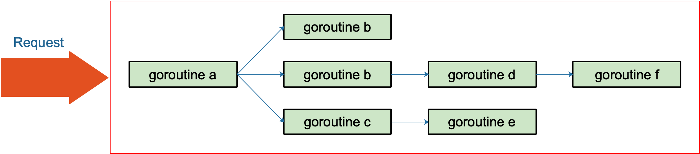
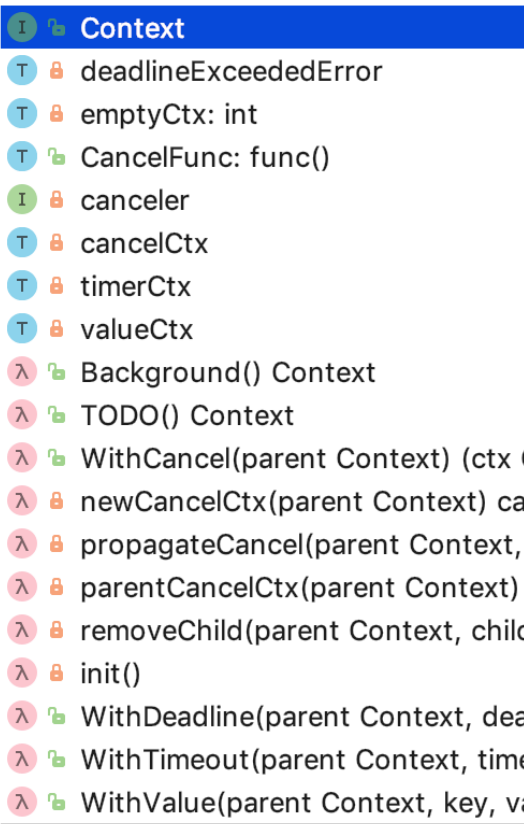
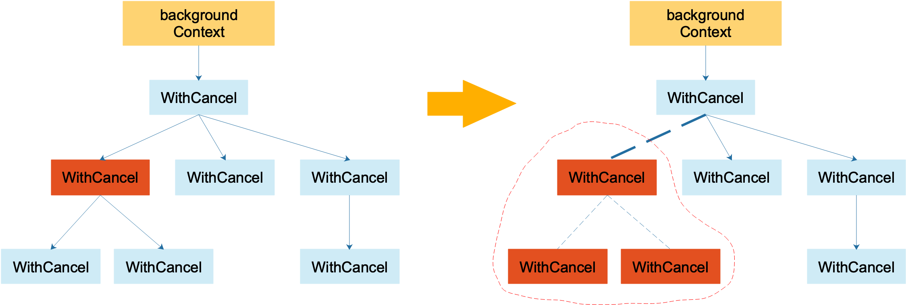
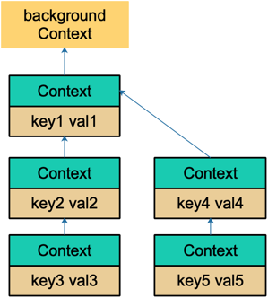

原文连接:https://www.cnblogs.com/qcrao-2018/p/11007503.html
目录
Go 语言的 context 包短小精悍，非常适合新手学习。不论是它的源码还是实际使用，都值得投入时间去学习。
这篇文章依然想尝试全面、深入地去研究。文章相比往期而言，整体不长，希望你看完可以有所收获！
什么是 context
Go 1.7 标准库引入 context，中文译作“上下文”，准确说它是 goroutine 的上下文，包含 goroutine 的运行状态、环境、现场等信息。
context 主要用来在 goroutine 之间传递上下文信息，包括：取消信号、超时时间、截止时间、k-v 等。
随着 context 包的引入，标准库中很多接口因此加上了 context 参数，例如 database/sql 包。context 几乎成为了并发控制和超时控制的标准做法。
context.Context 类型的值可以协调多个 groutine 中的代码执行“取消”操作，并且可以存储键值对。最重要的是它是并发安全的。
与它协作的 API 都可以由外部控制执行“取消”操作，例如：取消一个 HTTP 请求的执行。
没看懂？没关系，先往后看。
为什么有 context
Go 常用来写后台服务，通常只需要几行代码，就可以搭建一个 http server。
在 Go 的 server 里，通常每来一个请求都会启动若干个 goroutine 同时工作：有些去数据库拿数据，有些调用下游接口获取相关数据……

这些 goroutine 需要共享这个请求的基本数据，例如登陆的 token，处理请求的最大超时时间（如果超过此值再返回数据，请求方因为超时接收不到）等等。当请求被取消或是处理时间太长，这有可能是使用者关闭了浏览器或是已经超过了请求方规定的超时时间，请求方直接放弃了这次请求结果。这时，所有正在为这个请求工作的 goroutine 需要快速退出，因为它们的“工作成果”不再被需要了。在相关联的 goroutine 都退出后，系统就可以回收相关的资源。
再多说一点，Go 语言中的 server 实际上是一个“协程模型”，也就是说一个协程处理一个请求。例如在业务的高峰期，某个下游服务的响应变慢，而当前系统的请求又没有超时控制，或者超时时间设置地过大，那么等待下游服务返回数据的协程就会越来越多。而我们知道，协程是要消耗系统资源的，后果就是协程数激增，内存占用飙涨，甚至导致服务不可用。更严重的会导致雪崩效应，整个服务对外表现为不可用，这肯定是 P0 级别的事故。这时，肯定有人要背锅了。
其实前面描述的 P0 级别事故，通过设置“允许下游最长处理时间”就可以避免。例如，给下游设置的 timeout 是 50 ms，如果超过这个值还没有接收到返回数据，就直接向客户端返回一个默认值或者错误。例如，返回商品的一个默认库存数量。注意，这里设置的超时时间和创建一个 http client 设置的读写超时时间不一样，这里不详细展开。可以去看看参考资料【Go 在今日头条的实践】一文，有很精彩的论述。
context 包就是为了解决上面所说的这些问题而开发的：在 一组 goroutine 之间传递共享的值、取消信号、deadline……

用简练一些的话来说，在Go 里，我们不能直接杀死协程，协程的关闭一般会用 channel+select 方式来控制。但是在某些场景下，例如处理一个请求衍生了很多协程，这些协程之间是相互关联的：需要共享一些全局变量、有共同的 deadline 等，而且可以同时被关闭。再用 channel+select 就会比较麻烦，这时就可以通过 context 来实现。
一句话：context 用来解决 goroutine 之间退出通知、元数据传递的功能。
context 底层实现原理
我们分析的 Go 版本依然是 1.9.2。
整体概览
context 包的代码并不长，context.go 文件总共不到 500 行，其中还有很多大段的注释，代码可能也就 200 行左右的样子，是一个非常值得研究的代码库。
先给大家看一张整体的图：

| 类型 | 名称 | 作用 |
|---|---|---|
| Context | 接口 | 定义了 Context 接口的四个方法 |
| emptyCtx | 结构体 | 实现了 Context 接口，它其实是个空的 context |
| CancelFunc | 函数 | 取消函数 |
| canceler | 接口 | context 取消接口，定义了两个方法 |
| cancelCtx | 结构体 | 可以被取消 |
| timerCtx | 结构体 | 超时会被取消 |
| valueCtx | 结构体 | 可以存储 k-v 对 |
| Background | 函数 | 返回一个空的 context，常作为根 context |
| TODO | 函数 | 返回一个空的 context，常用于重构时期，没有合适的 context 可用 |
| WithCancel | 函数 | 基于父 context，生成一个可以取消的 context |
| newCancelCtx | 函数 | 创建一个可取消的 context |
| propagateCancel | 函数 | 向下传递 context 节点间的取消关系 |
| parentCancelCtx | 函数 | 找到第一个可取消的父节点 |
| removeChild | 函数 | 去掉父节点的孩子节点 |
| init | 函数 | 包初始化 |
| WithDeadline | 函数 | 创建一个有 deadline 的 context |
| WithTimeout | 函数 | 创建一个有 timeout 的 context |
| WithValue | 函数 | 创建一个存储 k-v 对的 context |
上面这张表展示了 context 的所有函数、接口、结构体，可以纵览全局，可以在读完文章后，再回头细看。
整体类图如下：

接口
Context
现在可以直接看源码：
type Context interface {
// 当 context 被取消或者到了 deadline，返回一个被关闭的 channel
Done() <-chan struct{}
// 在 channel Done 关闭后，返回 context 取消原因
Err() error
// 返回 context 是否会被取消以及自动取消时间（即 deadline）
Deadline() (deadline time.Time, ok bool)
// 获取 key 对应的 value
Value(key interface{}) interface{}
}Context 是一个接口，定义了 4 个方法，它们都是幂等的。也就是说连续多次调用同一个方法，得到的结果都是相同的。
Done() 返回一个 channel，可以表示 context 被取消的信号：当这个 channel 被关闭时，说明 context 被取消了。注意，这是一个只读的channel。 我们又知道，读一个关闭的 channel 会读出相应类型的零值。并且源码里没有地方会向这个 channel 里面塞入值。换句话说，这是一个 receive-only 的 channel。因此在子协程里读这个 channel，除非被关闭，否则读不出来任何东西。也正是利用了这一点，子协程从 channel 里读出了值（零值）后，就可以做一些收尾工作，尽快退出。
Err() 返回一个错误，表示 channel 被关闭的原因。例如是被取消，还是超时。
Deadline() 返回 context 的截止时间，通过此时间，函数就可以决定是否进行接下来的操作，如果时间太短，就可以不往下做了，否则浪费系统资源。当然，也可以用这个 deadline 来设置一个 I/O 操作的超时时间。
Value() 获取之前设置的 key 对应的 value。
canceler
再来看另外一个接口：
type canceler interface {
cancel(removeFromParent bool, err error)
Done() <-chan struct{}
}实现了上面定义的两个方法的 Context，就表明该 Context 是可取消的。源码中有两个类型实现了 canceler 接口：*cancelCtx 和 *timerCtx。注意是加了 * 号的，是这两个结构体的指针实现了 canceler 接口。
Context 接口设计成这个样子的原因：
- “取消”操作应该是建议性，而非强制性
caller 不应该去关心、干涉 callee 的情况，决定如何以及何时 return 是 callee 的责任。caller 只需发送“取消”信息，callee 根据收到的信息来做进一步的决策，因此接口并没有定义 cancel 方法。
- “取消”操作应该可传递
“取消”某个函数时，和它相关联的其他函数也应该“取消”。因此，Done() 方法返回一个只读的 channel，所有相关函数监听此 channel。一旦 channel 关闭，通过 channel 的“广播机制”，所有监听者都能收到。
结构体
emptyCtx
源码中定义了 Context 接口后，并且给出了一个实现：
type emptyCtx int
func (*emptyCtx) Deadline() (deadline time.Time, ok bool) {
return
}
func (*emptyCtx) Done() <-chan struct{} {
return nil
}
func (*emptyCtx) Err() error {
return nil
}
func (*emptyCtx) Value(key interface{}) interface{} {
return nil
}看这段源码，非常 happy。因为每个函数都实现的异常简单，要么是直接返回，要么是返回 nil。
所以，这实际上是一个空的 context，永远不会被 cancel，没有存储值，也没有 deadline。
它被包装成：
var (
background = new(emptyCtx)
todo = new(emptyCtx)
)通过下面两个导出的函数（首字母大写）对外公开：
func Background() Context {
return background
}
func TODO() Context {
return todo
}background 通常用在 main 函数中，作为所有 context 的根节点。
todo 通常用在并不知道传递什么 context的情形。例如，调用一个需要传递 context 参数的函数，你手头并没有其他 context 可以传递，这时就可以传递 todo。这常常发生在重构进行中，给一些函数添加了一个 Context 参数，但不知道要传什么，就用 todo “占个位子”，最终要换成其他 context。
cancelCtx
再来看一个重要的 context：
type cancelCtx struct {
Context
// 保护之后的字段
mu sync.Mutex
done chan struct{}
children map[canceler]struct{}
err error
}这是一个可以取消的 Context，实现了 canceler 接口。它直接将接口 Context 作为它的一个匿名字段，这样，它就可以被看成一个 Context。
先来看 Done() 方法的实现：
func (c *cancelCtx) Done() <-chan struct{} {
c.mu.Lock()
if c.done == nil {
c.done = make(chan struct{})
}
d := c.done
c.mu.Unlock()
return d
}c.done 是“懒汉式”创建，只有调用了 Done() 方法的时候才会被创建。再次说明，函数返回的是一个只读的 channel，而且没有地方向这个 channel 里面写数据。所以，直接调用读这个 channel，协程会被 block 住。一般通过搭配 select 来使用。一旦关闭，就会立即读出零值。
Err() 和 String() 方法比较简单，不多说。推荐看源码，非常简单。
接下来，我们重点关注 cancel() 方法的实现：
func (c *cancelCtx) cancel(removeFromParent bool, err error) {
// 必须要传 err
if err == nil {
panic("context: internal error: missing cancel error")
}
c.mu.Lock()
if c.err != nil {
c.mu.Unlock()
return // 已经被其他协程取消
}
// 给 err 字段赋值
c.err = err
// 关闭 channel，通知其他协程
if c.done == nil {
c.done = closedchan
} else {
close(c.done)
}
// 遍历它的所有子节点
for child := range c.children {
// 递归地取消所有子节点
child.cancel(false, err)
}
// 将子节点置空
c.children = nil
c.mu.Unlock()
if removeFromParent {
// 从父节点中移除自己
removeChild(c.Context, c)
}
}总体来看，cancel() 方法的功能就是关闭 channel：c.done；递归地取消它的所有子节点；从父节点从删除自己。达到的效果是通过关闭 channel，将取消信号传递给了它的所有子节点。goroutine 接收到取消信号的方式就是 select 语句中的读 c.done 被选中。
我们再来看创建一个可取消的 Context 的方法：
func WithCancel(parent Context) (ctx Context, cancel CancelFunc) {
c := newCancelCtx(parent)
propagateCancel(parent, &c)
return &c, func() { c.cancel(true, Canceled) }
}
func newCancelCtx(parent Context) cancelCtx {
return cancelCtx{Context: parent}
}这是一个暴露给用户的方法，传入一个父 Context（这通常是一个 background，作为根节点），返回新建的 context，新 context 的 done channel 是新建的（前文讲过）。
当 WithCancel 函数返回的 CancelFunc 被调用或者是父节点的 done channel 被关闭（父节点的 CancelFunc 被调用），此 context（子节点） 的 done channel 也会被关闭。
注意传给 WithCancel 方法的参数，前者是 true，也就是说取消的时候，需要将自己从父节点里删除。第二个参数则是一个固定的取消错误类型：
var Canceled = errors.New("context canceled")还注意到一点，调用子节点 cancel 方法的时候，传入的第一个参数 removeFromParent 是 false。
两个问题需要回答：1. 什么时候会传 true？2. 为什么有时传 true，有时传 false？
当 removeFromParent 为 true 时，会将当前节点的 context 从父节点 context 中删除：
func removeChild(parent Context, child canceler) {
p, ok := parentCancelCtx(parent)
if !ok {
return
}
p.mu.Lock()
if p.children != nil {
delete(p.children, child)
}
p.mu.Unlock()
}最关键的一行：
delete(p.children, child)什么时候会传 true 呢？答案是调用 WithCancel() 方法的时候，也就是新创建一个可取消的 context 节点时，返回的 cancelFunc 函数会传入 true。这样做的结果是：当调用返回的 cancelFunc 时，会将这个 context 从它的父节点里“除名”，因为父节点可能有很多子节点，你自己取消了，所以我要和你断绝关系，对其他人没影响。
在取消函数内部，我知道，我所有的子节点都会因为我的一：c.children = nil 而化为灰烬。我自然就没有必要再多做这一步，最后我所有的子节点都会和我断绝关系，没必要一个个做。另外，如果遍历子节点的时候，调用 child.cancel 函数传了 true，还会造成同时遍历和删除一个 map 的境地，会有问题的。

如上左图，代表一棵 context 树。当调用左图中标红 context 的 cancel 方法后，该 context 从它的父 context 中去除掉了：实线箭头变成了虚线。且虚线圈框出来的 context 都被取消了，圈内的 context 间的父子关系都荡然无存了。
重点看 propagateCancel()：
func propagateCancel(parent Context, child canceler) {
// 父节点是个空节点
if parent.Done() == nil {
return // parent is never canceled
}
// 找到可以取消的父 context
if p, ok := parentCancelCtx(parent); ok {
p.mu.Lock()
if p.err != nil {
// 父节点已经被取消了，本节点（子节点）也要取消
child.cancel(false, p.err)
} else {
// 父节点未取消
if p.children == nil {
p.children = make(map[canceler]struct{})
}
// "挂到"父节点上
p.children[child] = struct{}{}
}
p.mu.Unlock()
} else {
// 如果没有找到可取消的父 context。新启动一个协程监控父节点或子节点取消信号
go func() {
select {
case <-parent.Done():
child.cancel(false, parent.Err())
case <-child.Done():
}
}()
}
}这个方法的作用就是向上寻找可以“挂靠”的“可取消”的 context，并且“挂靠”上去。这样，调用上层 cancel 方法的时候，就可以层层传递，将那些挂靠的子 context 同时“取消”。
这里着重解释下为什么会有 else 描述的情况发生。else 是指当前节点 context 没有向上找到可以取消的父节点，那么就要再启动一个协程监控父节点或者子节点的取消动作。
这里就有疑问了，既然没找到可以取消的父节点，那 case <-parent.Done() 这个 case 就永远不会发生，所以可以忽略这个 case；而 case <-child.Done() 这个 case 又啥事不干。那这个 else 不就多余了吗？
其实不然。我们来看 parentCancelCtx 的代码：
func parentCancelCtx(parent Context) (*cancelCtx, bool) {
for {
switch c := parent.(type) {
case *cancelCtx:
return c, true
case *timerCtx:
return &c.cancelCtx, true
case *valueCtx:
parent = c.Context
default:
return nil, false
}
}
}这里只会识别三种 Context 类型：cancelCtx，timerCtx，*valueCtx。若是把 Context 内嵌到一个类型里，就识别不出来了。
由于 context 包的代码并不多，所以我直接把它 copy 出来了，然后在 else 语句里加上了几条打印语句，来验证上面的说法：
type MyContext struct {
// 这里的 Context 是我 copy 出来的，所以前面不用加 context.
Context
}
func main() {
childCancel := true
parentCtx, parentFunc := WithCancel(Background())
mctx := MyContext{parentCtx}
childCtx, childFun := WithCancel(mctx)
if childCancel {
childFun()
} else {
parentFunc()
}
fmt.Println(parentCtx)
fmt.Println(mctx)
fmt.Println(childCtx)
// 防止主协程退出太快，子协程来不及打印
time.Sleep(10 * time.Second)
}我自已在 else 里添加的打印语句我就不贴出来了，感兴趣的可以自己动手实验下。我们看下三个 context 的打印结果：
context.Background.WithCancel
{context.Background.WithCancel}
{context.Background.WithCancel}.WithCancel果然，mctx，childCtx 和正常的 parentCtx 不一样，因为它是一个自定义的结构体类型。
else 这段代码说明，如果把 ctx 强行塞进一个结构体，并用它作为父节点，调用 WithCancel 函数构建子节点 context 的时候，Go 会新启动一个协程来监控取消信号，明显有点浪费嘛。
再来说一下，select 语句里的两个 case 其实都不能删。
select {
case <-parent.Done():
child.cancel(false, parent.Err())
case <-child.Done():
}第一个 case 说明当父节点取消，则取消子节点。如果去掉这个 case，那么父节点取消的信号就不能传递到子节点。
第二个 case 是说如果子节点自己取消了，那就退出这个 select，父节点的取消信号就不用管了。如果去掉这个 case，那么很可能父节点一直不取消，这个 goroutine 就泄漏了。当然，如果父节点取消了，就会重复让子节点取消，不过，这也没什么影响嘛。
timerCtx
timerCtx 基于 cancelCtx，只是多了一个 time.Timer 和一个 deadline。Timer 会在 deadline 到来时，自动取消 context。
type timerCtx struct {
cancelCtx
timer *time.Timer // Under cancelCtx.mu.
deadline time.Time
}timerCtx 首先是一个 cancelCtx，所以它能取消。看下 cancel() 方法：
func (c *timerCtx) cancel(removeFromParent bool, err error) {
// 直接调用 cancelCtx 的取消方法
c.cancelCtx.cancel(false, err)
if removeFromParent {
// 从父节点中删除子节点
removeChild(c.cancelCtx.Context, c)
}
c.mu.Lock()
if c.timer != nil {
// 关掉定时器，这样，在deadline 到来时，不会再次取消
c.timer.Stop()
c.timer = nil
}
c.mu.Unlock()
}创建 timerCtx 的方法：
func WithTimeout(parent Context, timeout time.Duration) (Context, CancelFunc) {
return WithDeadline(parent, time.Now().Add(timeout))
}WithTimeout 函数直接调用了 WithDeadline，传入的 deadline 是当前时间加上 timeout 的时间，也就是从现在开始再经过 timeout 时间就算超时。也就是说，WithDeadline 需要用的是绝对时间。重点来看它：
func WithDeadline(parent Context, deadline time.Time) (Context, CancelFunc) {
if cur, ok := parent.Deadline(); ok && cur.Before(deadline) {
// 如果父节点 context 的 deadline 早于指定时间。直接构建一个可取消的 context。
// 原因是一旦父节点超时，自动调用 cancel 函数，子节点也会随之取消。
// 所以不用单独处理子节点的计时器时间到了之后，自动调用 cancel 函数
return WithCancel(parent)
}
// 构建 timerCtx
c := &timerCtx{
cancelCtx: newCancelCtx(parent),
deadline: deadline,
}
// 挂靠到父节点上
propagateCancel(parent, c)
// 计算当前距离 deadline 的时间
d := time.Until(deadline)
if d <= 0 {
// 直接取消
c.cancel(true, DeadlineExceeded) // deadline has already passed
return c, func() { c.cancel(true, Canceled) }
}
c.mu.Lock()
defer c.mu.Unlock()
if c.err == nil {
// d 时间后，timer 会自动调用 cancel 函数。自动取消
c.timer = time.AfterFunc(d, func() {
c.cancel(true, DeadlineExceeded)
})
}
return c, func() { c.cancel(true, Canceled) }
}也就是说仍然要把子节点挂靠到父节点，一旦父节点取消了，会把取消信号向下传递到子节点，子节点随之取消。
有一个特殊情况是，如果要创建的这个子节点的 deadline 比父节点要晚，也就是说如果父节点是时间到自动取消，那么一定会取消这个子节点，导致子节点的 deadline 根本不起作用，因为子节点在 deadline 到来之前就已经被父节点取消了。
这个函数的最核心的一句是：
c.timer = time.AfterFunc(d, func() {
c.cancel(true, DeadlineExceeded)
})c.timer 会在 d 时间间隔后，自动调用 cancel 函数，并且传入的错误就是 DeadlineExceeded：
var DeadlineExceeded error = deadlineExceededError{}
type deadlineExceededError struct{}
func (deadlineExceededError) Error() string { return "context deadline exceeded" }也就是超时错误。
valueCtx
type valueCtx struct {
Context
key, val interface{}
}它实现了两个方法：
func (c *valueCtx) String() string {
return fmt.Sprintf("%v.WithValue(%#v, %#v)", c.Context, c.key, c.val)
}
func (c *valueCtx) Value(key interface{}) interface{} {
if c.key == key {
return c.val
}
return c.Context.Value(key)
}由于它直接将 Context 作为匿名字段，因此仅管它只实现了 2 个方法，其他方法继承自父 context。但它仍然是一个 Context，这是 Go 语言的一个特点。
创建 valueCtx 的函数：
func WithValue(parent Context, key, val interface{}) Context {
if key == nil {
panic("nil key")
}
if !reflect.TypeOf(key).Comparable() {
panic("key is not comparable")
}
return &valueCtx{parent, key, val}
}对 key 的要求是可比较，因为之后需要通过 key 取出 context 中的值，可比较是必须的。
通过层层传递 context，最终形成这样一棵树：

和链表有点像，只是它的方向相反：Context 指向它的父节点，链表则指向下一个节点。通过 WithValue 函数，可以创建层层的 valueCtx，存储 goroutine 间可以共享的变量。
取值的过程，实际上是一个递归查找的过程：
func (c *valueCtx) Value(key interface{}) interface{} {
if c.key == key {
return c.val
}
return c.Context.Value(key)
}它会顺着链路一直往上找，比较当前节点的 key
是否是要找的 key，如果是，则直接返回 value。否则，一直顺着 context 往前，最终找到根节点（一般是 emptyCtx），直接返回一个 nil。所以用 Value 方法的时候要判断结果是否为 nil。
因为查找方向是往上走的，所以，父节点没法获取子节点存储的值，子节点却可以获取父节点的值。
WithValue 创建 context 节点的过程实际上就是创建链表节点的过程。两个节点的 key 值是可以相等的，但它们是两个不同的 context 节点。查找的时候，会向上查找到最后一个挂载的 context 节点，也就是离得比较近的一个父节点 context。所以，整体上而言，用 WithValue 构造的其实是一个低效率的链表。
如果你接手过项目，肯定经历过这样的窘境：在一个处理过程中，有若干子函数、子协程。各种不同的地方会向 context 里塞入各种不同的 k-v 对，最后在某个地方使用。
你根本就不知道什么时候什么地方传了什么值？这些值会不会被“覆盖”（底层是两个不同的 context 节点，查找的时候，只会返回一个结果）？你肯定会崩溃的。
而这也是 context.Value 最受争议的地方。很多人建议尽量不要通过 context 传值。
如何使用 context
context 使用起来非常方便。源码里对外提供了一个创建根节点 context 的函数：
func Background() Contextbackground 是一个空的 context， 它不能被取消，没有值，也没有超时时间。
有了根节点 context，又提供了四个函数创建子节点 context：
func WithCancel(parent Context) (ctx Context, cancel CancelFunc)
func WithDeadline(parent Context, deadline time.Time) (Context, CancelFunc)
func WithTimeout(parent Context, timeout time.Duration) (Context, CancelFunc)
func WithValue(parent Context, key, val interface{}) Contextcontext 会在函数传递间传递。只需要在适当的时间调用 cancel 函数向 goroutines 发出取消信号或者调用 Value 函数取出 context 中的值。
在官方博客里，对于使用 context 提出了几点建议：
- Do not store Contexts inside a struct type; instead, pass a Context explicitly to each function that needs it. The Context should be the first parameter, typically named ctx.
- Do not pass a nil Context, even if a function permits it. Pass context.TODO if you are unsure about which Context to use.
- Use context Values only for request-scoped data that transits processes and APIs, not for passing optional parameters to functions.
- The same Context may be passed to functions running in different goroutines; Contexts are safe for simultaneous use by multiple goroutines.
我翻译一下：
- 不要将 Context 塞到结构体里。直接将 Context 类型作为函数的第一参数，而且一般都命名为 ctx。
- 不要向函数传入一个 nil 的 context，如果你实在不知道传什么，标准库给你准备好了一个 context：todo。
- 不要把本应该作为函数参数的类型塞到 context 中，context 存储的应该是一些共同的数据。例如：登陆的 session、cookie 等。
- 同一个 context 可能会被传递到多个 goroutine，别担心，context 是并发安全的。
传递共享的数据
对于 Web 服务端开发，往往希望将一个请求处理的整个过程串起来，这就非常依赖于 Thread Local（对于 Go 可理解为单个协程所独有） 的变量，而在 Go 语言中并没有这个概念，因此需要在函数调用的时候传递 context。
package main
import (
"context"
"fmt"
)
func main() {
ctx := context.Background()
process(ctx)
ctx = context.WithValue(ctx, "traceId", "qcrao-2019")
process(ctx)
}
func process(ctx context.Context) {
traceId, ok := ctx.Value("traceId").(string)
if ok {
fmt.Printf("process over. trace_id=%s\n", traceId)
} else {
fmt.Printf("process over. no trace_id\n")
}
}运行结果：
process over. no trace_id
process over. trace_id=qcrao-2019第一次调用 process 函数时，ctx 是一个空的 context，自然取不出来 traceId。第二次，通过 WithValue 函数创建了一个 context，并赋上了 traceId 这个 key，自然就能取出来传入的 value 值。
当然，现实场景中可能是从一个 HTTP 请求中获取到的 Request-ID。所以，下面这个样例可能更适合：
const requestIDKey int = 0
func WithRequestID(next http.Handler) http.Handler {
return http.HandlerFunc(
func(rw http.ResponseWriter, req *http.Request) {
// 从 header 中提取 request-id
reqID := req.Header.Get("X-Request-ID")
// 创建 valueCtx。使用自定义的类型，不容易冲突
ctx := context.WithValue(
req.Context(), requestIDKey, reqID)
// 创建新的请求
req = req.WithContext(ctx)
// 调用 HTTP 处理函数
next.ServeHTTP(rw, req)
}
)
}
// 获取 request-id
func GetRequestID(ctx context.Context) string {
ctx.Value(requestIDKey).(string)
}
func Handle(rw http.ResponseWriter, req *http.Request) {
// 拿到 reqId，后面可以记录日志等等
reqID := GetRequestID(req.Context())
...
}
func main() {
handler := WithRequestID(http.HandlerFunc(Handle))
http.ListenAndServe("/", handler)
}取消 goroutine
我们先来设想一个场景：打开外卖的订单页，地图上显示外卖小哥的位置，而且是每秒更新 1 次。app 端向后台发起 websocket 连接（现实中可能是轮询）请求后，后台启动一个协程，每隔 1 秒计算 1 次小哥的位置，并发送给端。如果用户退出此页面，则后台需要“取消”此过程，退出 goroutine，系统回收资源。
后端可能的实现如下：
func Perform() {
for {
calculatePos()
sendResult()
time.Sleep(time.Second)
}
}如果需要实现“取消”功能，并且在不了解 context 功能的前提下，可能会这样做：给函数增加一个指针型的 bool 变量，在 for 语句的开始处判断 bool 变量是发由 true 变为 false，如果改变，则退出循环。
上面给出的简单做法，可以实现想要的效果，没有问题，但是并不优雅，并且一旦协程数量多了之后，并且各种嵌套，就会很麻烦。优雅的做法，自然就要用到 context。
func Perform(ctx context.Context) {
for {
calculatePos()
sendResult()
select {
case <-ctx.Done():
// 被取消，直接返回
return
case <-time.After(time.Second):
// block 1 秒钟
}
}
}主流程可能是这样的：
ctx, cancel := context.WithTimeout(context.Background(), time.Hour)
go Perform(ctx)
// ……
// app 端返回页面，调用cancel 函数
cancel()注意一个细节，WithTimeOut 函数返回的 context 和 cancelFun 是分开的。context 本身并没有取消函数，这样做的原因是取消函数只能由外层函数调用，防止子节点 context 调用取消函数，从而严格控制信息的流向：由父节点 context 流向子节点 context。
防止 goroutine 泄漏
前面那个例子里，goroutine 还是会自己执行完，最后返回，只不过会多浪费一些系统资源。这里改编一个“如果不用 context 取消，goroutine 就会泄漏的例子”，来自参考资料：【避免协程泄漏】。
func gen() <-chan int {
ch := make(chan int)
go func() {
var n int
for {
ch <- n
n++
time.Sleep(time.Second)
}
}()
return ch
}这是一个可以生成无限整数的协程，但如果我只需要它产生的前 5 个数，那么就会发生 goroutine 泄漏：
func main() {
for n := range gen() {
fmt.Println(n)
if n == 5 {
break
}
}
// ……
}当 n == 5 的时候，直接 break 掉。那么 gen 函数的协程就会执行无限循环，永远不会停下来。发生了 goroutine 泄漏。
用 context 改进这个例子：
func gen(ctx context.Context) <-chan int {
ch := make(chan int)
go func() {
var n int
for {
select {
case <-ctx.Done():
return
case ch <- n:
n++
time.Sleep(time.Second)
}
}
}()
return ch
}
func main() {
ctx, cancel := context.WithCancel(context.Background())
defer cancel() // 避免其他地方忘记 cancel，且重复调用不影响
for n := range gen(ctx) {
fmt.Println(n)
if n == 5 {
cancel()
break
}
}
// ……
}增加一个 context，在 break 前调用 cancel 函数，取消 goroutine。gen 函数在接收到取消信号后，直接退出，系统回收资源。
context 真的这么好吗
读完全文，你一定有这种感觉：context 就是为 server 而设计的。说什么处理一个请求，需要启动多个 goroutine 并行地去处理，并且在这些 goroutine 之间还要传递一些共享的数据等等，这些都是写一个 server 要做的事。
没错，Go 很适合写 server，但它终归是一门通用的语言。你在用 Go 做 Leetcode 上面的题目的时候，肯定不会认为它和一般的语言有什么差别。所以，很多特性好不好，应该从 Go 只是一门普通的语言，很擅长写 server 的角度来看。
从这个角度来看，context 并没有那么美好。Go 官方建议我们把 Context 作为函数的第一个参数，甚至连名字都准备好了。这造成一个后果：因为我们想控制所有的协程的取消动作，所以需要在几乎所有的函数里加上一个 Context 参数。很快，我们的代码里，context 将像病毒一样扩散的到处都是。
在参考资料【Go2 应该去掉 context】这篇英文博客里，作者甚至调侃说：如果要把 Go 标准库的大部分函数都加上 context 参数的话，例如下面这样：
n, err := r.Read(context.TODO(), p)就给我来一枪吧！
原文是这样说的：put a bullet in my head, please.我当时看到这句话的时候，会心一笑。这可能就是陶渊明说的：每有会意，便欣然忘食。当然，我是在晚饭会看到这句话的。
为了表达自己对 context 并没有什么好感，作者接着又说了一句：If you use ctx.Value in my (non-existent) company, you’re fired. 简直太幽默了，哈哈。
另外，像 WithCancel、WithDeadline、WithTimeout、WithValue 这些创建函数，实际上是创建了一个个的链表结点而已。我们知道，对链表的操作，通常都是 O(n) 复杂度的，效率不高。
那么，context 包到底解决了什么问题呢？答案是：cancelation。仅管它并不完美，但它确实很简洁地解决了问题。
总结
到这里，整个 context 包的内容就全部讲完了。源码非常短，很适合学习，一定要去读一下。
context 包是 Go 1.7 引入的标准库，主要用于在 goroutine 之间传递取消信号、超时时间、截止时间以及一些共享的值等。它并不是太完美，但几乎成了并发控制和超时控制的标准做法。
使用上，先创建一个根节点的 context，之后根据库提供的四个函数创建相应功能的子节点 context。由于它是并发安全的，所以可以放心地传递。
当使用 context 作为函数参数时，直接把它放在第一个参数的位置，并且命名为 ctx。另外，不要把 context 嵌套在自定义的类型里。
最后，大家下次在看到代码里有用到 context 的，观察下是怎么使用的，肯定逃不出我们讲的几种类型。熟悉之后会发现：context 可能并不完美，但它确实简洁高效地解决了问题。
参考资料
【context 官方博客】https://blog.golang.org/context
【今日头条构建Go的实践】https://zhuanlan.zhihu.com/p/26695984
【飞雪无情的博客】https://www.flysnow.org/2017/05/12/go-in-action-go-context.html
【context 源码】https://juejin.im/post/5a6873fef265da3e317e55b6
【腾讯云源码阅读】https://cloud.tencent.com/developer/section/1140703
【更宏观地一些思考，english】https://siadat.github.io/post/context
【避免协程泄漏】https://rakyll.org/leakingctx/
【应用分类】https://dreamerjonson.com/2019/05/09/golang-73-context/index.html
【官方文档示例翻译版】https://brantou.github.io/2017/05/19/go-concurrency-patterns-context/
【例子，english】http://p.agnihotry.com/post/understanding_the_context_package_in_golang/
【Go2 应该去掉 context】https://faiface.github.io/post/context-should-go-away-go2/
【源码，比较详细】https://juejin.im/post/5c1514c86fb9a049b82a5acb
【Golang Context 是好的设计吗？】https://segmentfault.com/a/1190000017394302
【今日头条的 Go 实践】https://36kr.com/p/5073181
【实例】https://zhuanlan.zhihu.com/p/60180409